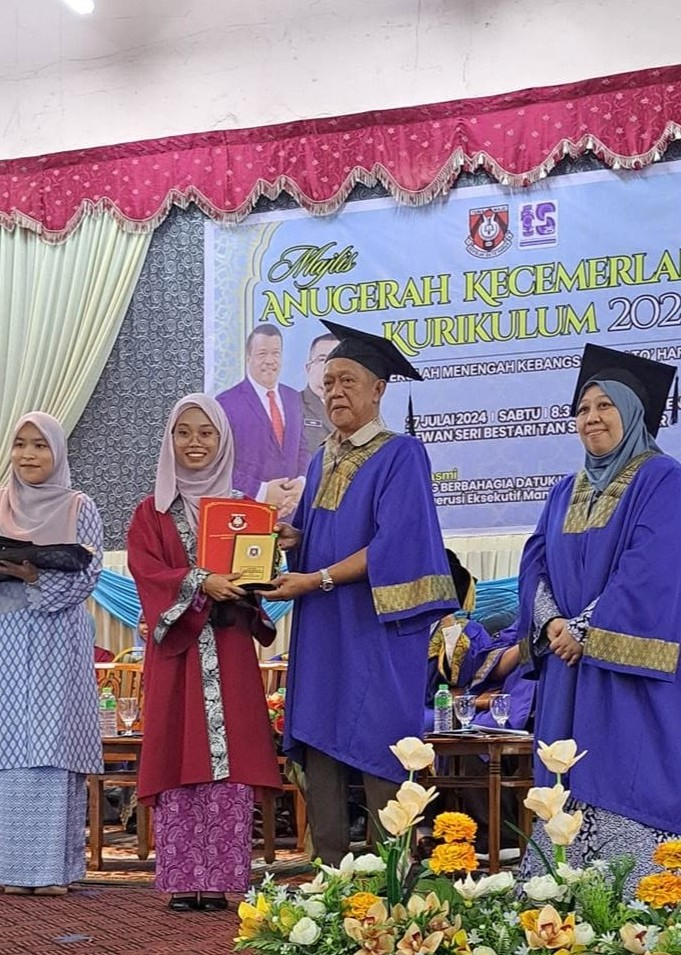

Home
Home
 About Me
About Me
 Education
Education
 Family
Family
 Friends
Friends
 Favorite Dessert
Favorite Dessert
 Hobbies
Hobbies
My Education Journey
Education is an important part of my life. Here are my education backgrounds and achievements.
Education Background
| Year | School / University | Level |
|---|---|---|
| 2013 - 2018 | Sekolah Kebangsaan Dato Manan (SKDM) | Primary School |
| 2019 - 2023 | Sekolah Menengah Kebangsaan Dato Harun (SMKDH) | Secondary School |
| 2024 - present | Universiti Teknologi MARA (UiTM), Kedah Branch | Tertiary Education |
Visit Their Official Website
Click on any school's badge to visit their official website.
SK Dato Manan (Primary School)
SK Dato Manan built my solid foundation in reading, math, and social skills while fostering my growth. Studying here was joyful because I had many friends, participated actively in numerous activities, and didn't know the meaning of tired! It was here that I sat for my UPSR examination, scoring 1A, 3B, and 2C.
SMK Dato Harun (Secondary School)
This school provided me with crucial core knowledge and useful life skills needed for the future. It taught me essential manners and the value of tolerance. I was guided by lovely, supportive teachers who gave excellent advice regarding my future direction. Here, I sat for my SPM examination and achieved 7A and 1B+.
UiTM Kedah Branch (Tertiary Education)
My current chapter. This university is helping me specialize in library science, helping me develop essential professional skills, and thoroughly preparing me for my future career. My studies here have taught me a great deal about workplace collaboration, navigating real-world scenarios, and drastically improving my public speaking confidence.
My Achievements

I participated actively in school programs at the Primary School level, graduated with 7A's at the Secondary School level, experiencing numerous collaborative works at the Tertiary Education level
Campus Life
My university life has taught me many valuable experiences. I learned teamwork, communication skills, and creativity through assignments and activities.